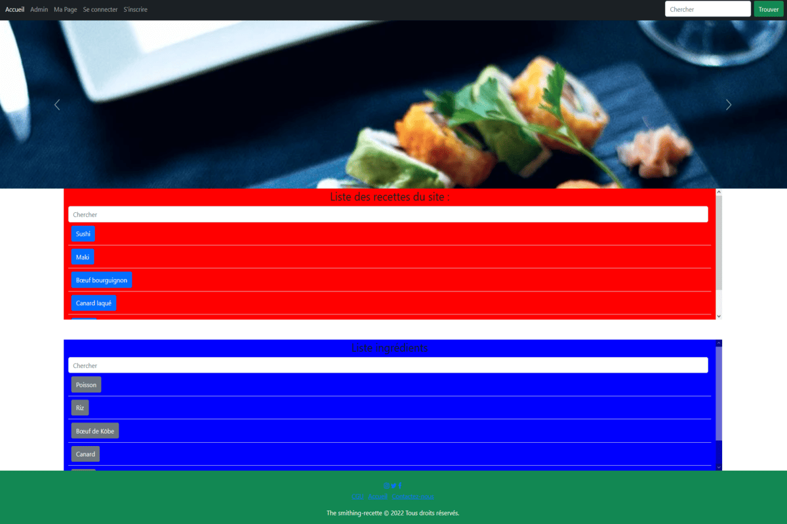

Sans un minimum de loisir, pas de travail créateur, par conséquent pas de culture ni de civilisation.
Roy Lewis.
Mes passions

La lecture.
Il est très facile de voyager en lisant un bon livre, parfois nous avons même l'impression de juste survoler les mots qui s'y trouvent en parcourant leurs pages.
Une liste de mes auteurs favoris :


La musique.
J'adore écouter de la musique tout en travaillant. L'on peut écouter différents styles; selon notre humeur ou encore selon ce que l'on n'est en train de faire afin de trouver plus facilement l'inspiration.
Une liste des groupes, artistes et bandes originales que j'aime écouter tout en travaillant :

Les jeux vidéo.
J'adore jouer aux jeux vidéo depuis que je suis petit, et il y a une fonction qui est leur est commune à tous : il faut toujours cliquer pour pouvoir continuer de jouer. J'affectionne tout particulièrement les J-RPG, ils sont la fusion merveilleuse des caractéristiques des rpg et du génie japonais; c'est d'ailleurs grâce à eux que j'ai eu envie de m'investir en anglais (afin de pouvoir jouer à ces jeux dit "jeux de niches" qui sont rarement traduit chez nous.
Une liste de mes styles de jeux préférés :

La science-fiction et le fantastique.
J'aime autant la science-fiction que le fantastique, ce sont deux types d'univers qui peuvent se retrouver partout et qui n'ont pour limite que notre imagination. On en compte aussi bien ces deux univers dans des œuvres cinématographiques, vidéoludiques, que littéraires.
Une liste de mes œuvres de science-fiction et fantastique préférés :
Actuellement :
Mes compétences de développeur
Elles sont en constante amélioration car pour moi la joie de ce métier fait que j'en apprend tous les jours, d'autant plus en étant impliqué, curieux et passionné.
Vous pouvez aussi aller faire un tour sur mon cv en version html/css, ou bien aller jeter un coup d'œil sur sa version pdf, voire même regarder la version animé pour en apprendre plus sur mes compétences et mon parcours professionnel.
Les langages.
HTML5

CSS3

JavaScript

PHP

MySQL

Les frameworks.
Bootstrap5

Les CMS.
Wordpress

Les outils.
Github

Visual studio code

Pendant les études, la réussite ne dépend que de soi, dans la vie professionnelle, la réussite dépend aussi des autres.
Edine-le-sage.
Mon portfolio
Mon CV

Voici le CV que j'ai fait en HTML5/CSS3, exclusivement pour mon portfolio. Il à été fait durant ma remise à niveau de développeur web chez Doranco, dans le but de me permettre de pratiquer mes nouvelles compétences et d'avoir un premier projet à exposer dans cette partie de mon site.
- HTML5
- CSS3
- JavaScript
- Bootstrap5
Projet Véville

Le projet Véville est un TP PHP que j'ai réalisé en une semaine durant ma remise à niveau de développeur web chez Doranco. Il consistait à refaire le site de location de véhicule pour une société nommé Véville en utilisant nos compétences fraîchement acquises en PHP. Il dispose d'un système d'inscription, de connection et de réservation pour les véhicules.
- HTML5
- CSS3
- Bootstrap5
- PHP
- MySQL
Bugstastique

Je l'ai fait en une journée et demie lors de la semaine d'initiation Wordpress de ma remise à niveau de développeur web en utilisant le thème color-newsmagazine. J'ai choisi de faire un site sur un sujet qui m'amusait: les bugs dans les jeux vidéo, et j'ai utilisé des captures d'écrans accumulées lors de mes nombreuses années de joueur pour illustrer le tout.
- Wordpress
Le projet recette

C'est un projet qu'une partie du groupe avec lequel j'ai fait ma formation de développeur d’applications informatiques PGI/ERP à décider de faire afin de mettre en pratique ce que nous venions d'apprendre.
C'était un exercice que nous avions vu durant notre formation, et que nous avions décidé de reprendre afin de le refaire tout en en améliorant les fonctionnalités.
Dans le but de simuler une situation réelle nous avons décidé d'utiliser la méthode agile. Nous avons commencé par faire de nouveaux diagrammes afin d'avoir un support visuel avant de nous mettre au travail. Nous avons ensuite travaillé en effectuant des "sprints" et des réunions en début et fin de projet afin de nous assurer que le travail des uns et des autres se passaient sans encombre.
Sur ce projet j'ai principalement travaillé l'entité Utilisateur, aussi bien en back qu'en front. J'ai aussi travaillé en duo avec Corentin Rasda sur la partie cookie du site qui permet à un utilisateur de rester connecté sur toutes les pages du site lors de sa visite.
Enfin, lors des dernières heures du projet c'est moi qui ai refait les commentaires des fichiers HTML et JavaScript afin de les rendre plus lisible et présentable.
- HTML5
- CSS3
- Bootstrap5
- Java
- MySQL
N’importe quel idiot peut écrire du code qu'un ordinateur peut comprendre. Les bons programmeurs écrivent du code que les humains peuvent comprendre.
Martin Fowler.